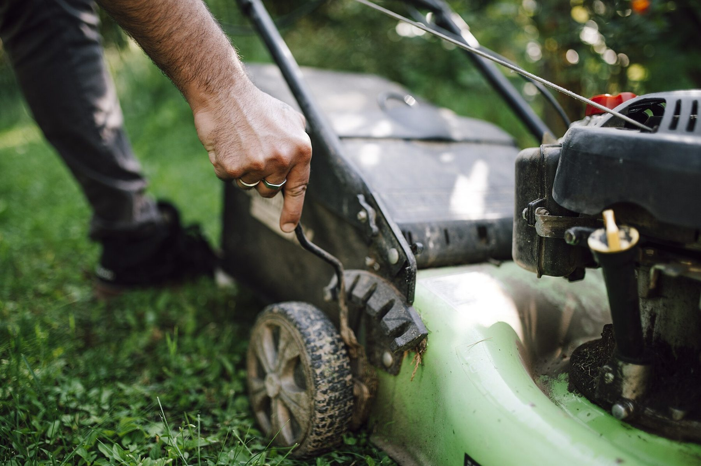
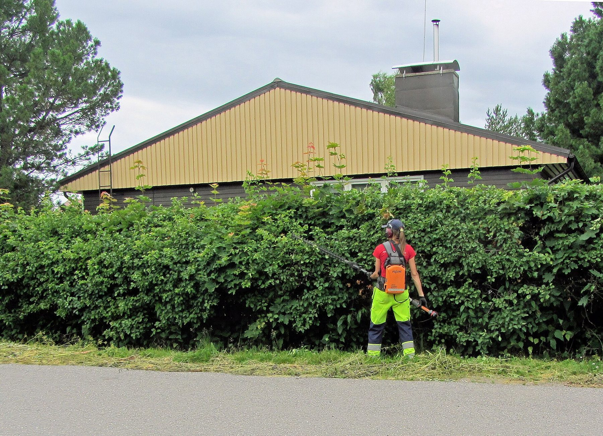

Un seul numéro pour l'entretien du jardin, le ménage, le petit bricolage, et même l'ordinateur ou les papiers.
Et plus selon vos besoins : demandez, Kévin vous dit si c'est possible.
Tonte, taille, désherbage.
Montage, fixations, petites réparations.
Ménage régulier ou ponctuel.
Dalles, bois, abords.
Ordinateur, imprimante, internet.
Courriers, démarches, classement.
Tri, débarras, rangement.
Selon vos besoins.

Photo d'illustrationJardin, ménage, petit bricolage ou assistance informatique à domicile : ces services ouvrent droit au crédit d'impôt de 50 %, selon les conditions en vigueur.
Montreuil-sur-Mer, Étaples, Le Touquet, Berck et les villages du secteur.